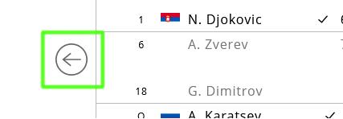
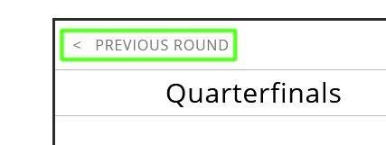
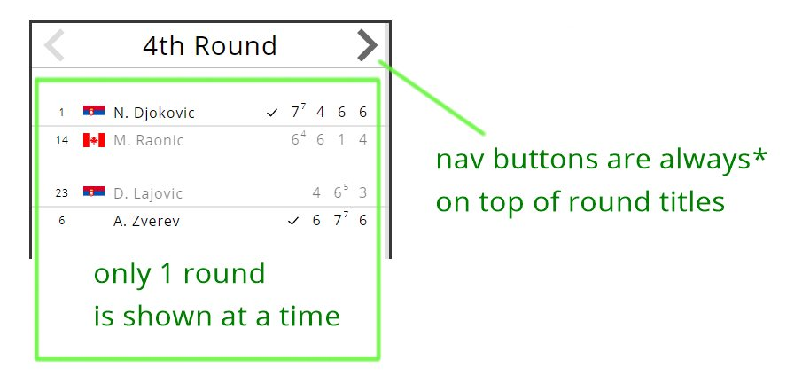

But first you have to convert your data to a proper format
You can also make a lot of visual adjustments to your diagram
You automatically get the most compact layout for a given data. (All rounds will be as wide as the widest actual match).
And it supports live updates
And it has a special mobile layout
Note that if you want to display countries' flags, you have to provide your own flag urls
You just provide your data and get this default (desktop) view
You can replace default "navigation buttons" with any other elements or text
 or 
You can do whatever you want when a match or its side (competitor) is clicked.
By default, when a side is clicked, its match history gets highlighted.
Instead you may want to navigate to a competitor's dedicated web page. For that you can specify onMatchSideClick callback in which you can change the window.location.
Similarly onMatchClick can be used to navigate to a page of a match. Or open a popup window. Or anything.
Setting either onMatchClick or onMatchSideClick will automatically discard the default "highlight" behaviour.
You may override the default navigation behaviour altogether.
For this easy-brackets gives you 3 methods: moveToPreviousRound, moveToNextRound, moveToNRound.
Easy-brackets by default doesn't display images for countries' flags.
But it allows you to use your own flag images (for that you have to provide a flag_url property for a Player).
But it's optional.
If you don't have flag images, you may at least have a nationality code displayed instead of a flag (nationality_code of a Player)
You can get this compact layout by setting useMobileLayout option to true:
Easy-playoffs can't switch to mobile layout automatically. It's your job to measure a screen and decide if mobile layout is necessary in a particular case.
More